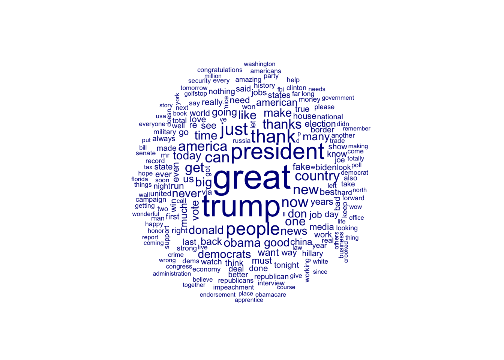
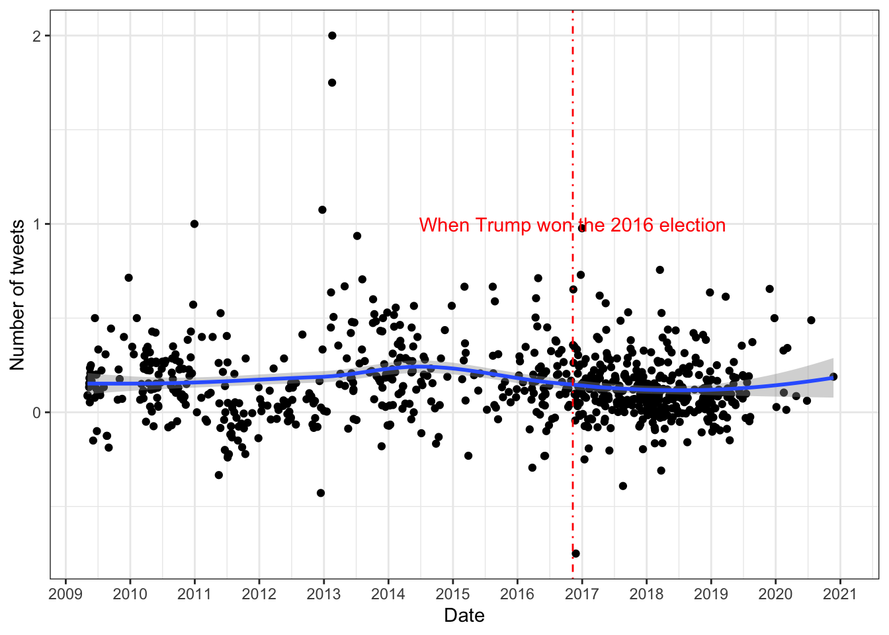
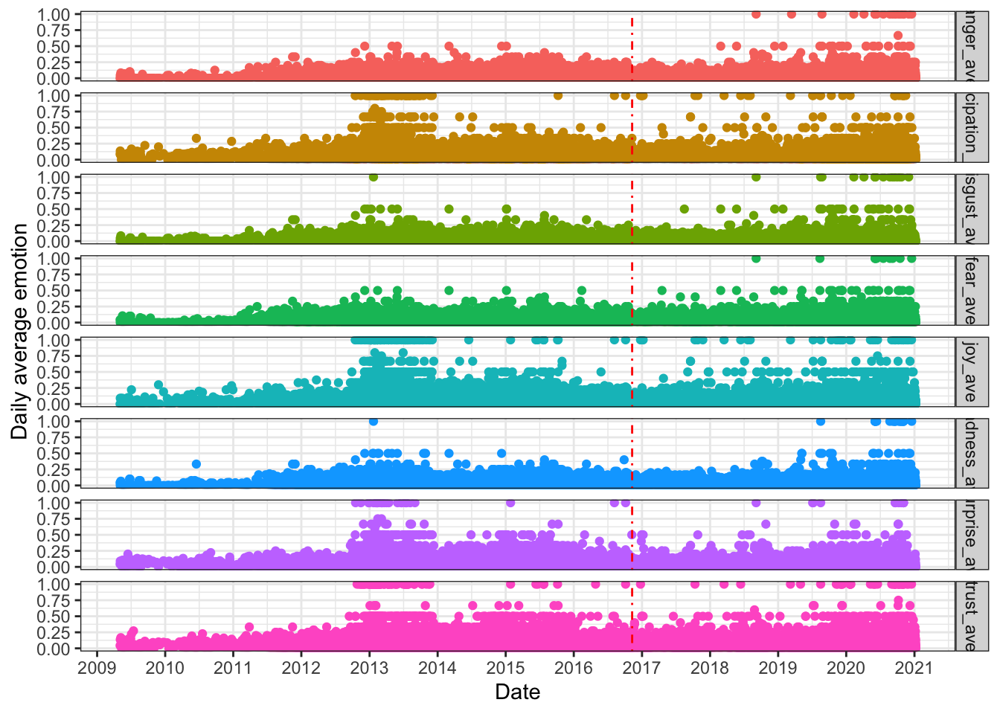

library(tidyverse)
library(quanteda)
library(tidytext)
library(quanteda.textstats)
library(quanteda.textplots)
library(vader) #install.packages("vader")
library(wordcloud) #install.packages("wordcloud")Week 9 Lab
Sentiment analysis
Trump’s tweets
In the example(s) above, we have been working with the presidential inaugural address texts. However, it is important to note the differences when compared to social media data, which can be considerably messier and noisier due to the presence of abbreviations, internet slang, emojis, and etc. Now, let’s play with some social media data. The dataset we’ll be using is from the Trump Twitter Archive, which compiles Donald Trump’s tweets dating back to 2016 (until before his account was suspended).
trump <- read.csv(sprintf("https://docs.google.com/uc?id=%s&export=download", "1xRKHaP-QwACMydlDnyFPEaFdtskJuBa6"))
trump$date <- as.Date(trump$date)
ggplot(data = trump, aes(x = date)) +
geom_line(stat = "count") +
scale_x_date(date_labels = "%Y", date_breaks = "1 year") +
geom_vline(xintercept = as.Date("2016-11-9"), linetype = 4, color = "red") +
annotate("text", x=as.Date("2016-11-9"), y=120, label="When Trump won the 2016 election", color = "red") +
labs(x = "Date", y = "Number of tweets") +
theme_bw()
Pre-processing
trump_clean <- trump
trump_clean <- trump %>% mutate(
### Extract mentions, hashtags, and url
mention = str_extract_all(text, "(^|\\s)@\\w+"),
hashtag = str_extract_all(text, "#\\w+"),
url = str_extract_all(text, "https?://\\S+"),
### Remove all the mentions, hashtags, and url for text cleaning
clean_text = str_replace_all(text, "RT\\s*@|@\\w+", " ") %>% ### remove mentions
str_replace_all(., "#\\w+", " ") %>% ### remove hashtags
str_replace_all(., "https?://\\S+", " ") %>% ### remove URL
str_replace_all("\\W+", " ") %>% ### remove all the non-words
tolower() %>% ### lowercase
trimws() ### trim the white space
)
clean_dfm <- corpus(trump_clean$clean_text) %>%
tokens(remove_punct = T, remove_numbers = T, remove_symbols = T) %>%
dfm(tolower = T) %>%
dfm_remove(stopwords("english"))
textstat_frequency(clean_dfm, n = 100) feature frequency rank docfreq group
1 s 9925 1 8704 all
2 great 7678 2 7139 all
3 trump 6856 3 6460 all
4 t 5904 4 5399 all
5 amp 5682 5 4707 all
6 president 4768 6 4520 all
7 thank 3622 7 3582 all
8 people 3534 8 3330 all
9 just 3412 9 3310 all
10 can 2876 10 2708 all
11 now 2716 11 2662 all
12 new 2517 12 2398 all
13 america 2453 13 2322 all
14 country 2433 14 2361 all
15 get 2425 15 2276 all
16 thanks 2309 16 2296 all
17 big 2154 17 2006 all
18 one 2062 18 1963 all
19 like 2059 19 1982 all
20 time 2035 20 1960 all
21 obama 2004 21 1921 all
22 donald 1931 22 1894 all
23 never 1893 23 1776 all
24 good 1880 24 1807 all
25 make 1871 25 1811 all
26 news 1862 26 1759 all
27 don 1859 27 1766 all
28 today 1852 28 1815 all
29 democrats 1831 29 1775 all
30 u 1790 30 1646 all
31 many 1755 31 1691 all
32 vote 1732 32 1550 all
33 us 1562 33 1477 all
34 going 1554 34 1476 all
35 back 1517 35 1441 all
36 american 1480 36 1373 all
37 want 1443 37 1321 all
38 m 1441 38 1368 all
39 much 1434 39 1360 all
40 see 1364 40 1336 all
41 even 1309 41 1269 all
42 years 1302 42 1251 all
43 job 1300 43 1273 all
44 fake 1294 44 1214 all
45 run 1284 45 1200 all
46 best 1276 46 1234 all
47 must 1275 47 1225 all
48 china 1247 48 1021 all
49 need 1225 49 1164 all
50 election 1219 50 1149 all
51 media 1205 51 1142 all
52 love 1190 52 1139 all
53 re 1183 53 1119 all
54 win 1177 54 1097 all
55 go 1172 55 1127 all
56 think 1152 56 1093 all
57 biden 1144 57 1007 all
58 way 1140 58 1107 all
59 really 1128 59 1091 all
60 day 1127 60 1083 all
61 last 1116 61 1100 all
62 know 1114 62 1057 all
63 house 1087 63 1050 all
64 done 1082 64 1035 all
65 states 1070 65 1027 all
66 world 1068 66 1035 all
67 state 1067 67 1012 all
68 ever 1065 68 1033 all
69 first 1064 69 1037 all
70 jobs 1058 70 902 all
71 work 1048 71 1003 all
72 true 1041 72 1028 all
73 bad 1039 73 997 all
74 realdonaldtrump 1033 74 1033 all
75 said 1024 75 969 all
76 tonight 1010 76 997 all
77 nothing 985 77 930 all
78 right 984 78 952 all
79 border 980 79 852 all
80 deal 979 80 884 all
81 show 974 81 938 all
82 hillary 970 82 935 all
83 via 966 83 963 all
84 watch 951 84 938 all
85 made 937 85 913 all
86 united 892 86 866 all
87 night 886 87 869 all
88 better 879 88 850 all
89 got 867 89 840 all
90 joe 862 90 785 all
91 let 845 91 827 all
92 look 843 92 819 all
93 total 837 93 832 all
94 well 826 94 805 all
95 always 818 95 793 all
96 republican 817 96 792 all
97 year 815 97 768 all
98 won 809 98 784 all
99 national 808 99 773 all
100 keep 801 100 774 allmystopwords = stopwords("english", source="snowball")
mystopwords = c("s", "t", "amp", "u", "m", mystopwords)
clean_dfm2 <- corpus(trump_clean$clean_text) %>%
tokens(remove_punct = T, remove_numbers = T, remove_symbols = T) %>%
dfm(tolower = T) %>%
dfm_remove(mystopwords)
textplot_wordcloud(clean_dfm2, max_words=200)
Simple frequency
# Sort by reverse frequency order
features_trump <- textstat_frequency(clean_dfm2, n = 100)
features_trump$feature <- with(features_trump, reorder(feature, -frequency))
features_trump %>%
top_n(30, wt = frequency) %>%
ggplot(aes(x = feature, y = frequency)) +
geom_bar(stat = "identity", fill = "steelblue") +
labs(y = "Frequency", x = NULL) +
theme_classic() +
theme(axis.text.x = element_text(angle = 60, hjust = 1),
legend.position = "none")Users
user_dfm <- corpus(trump_clean$text) %>%
tokens(remove_punct = T) %>%
dfm(tolower = T) %>%
dfm_select(pattern = "@*")
topuser <- names(topfeatures(user_dfm, 50))
head(topuser)[1] "@realdonaldtrump" "@foxnews" "@whitehouse" "@foxandfriends"
[5] "@barackobama" "@cnn" user_fcm <- fcm(user_dfm)
head(user_fcm)Feature co-occurrence matrix of: 6 by 16,348 features.
features
features @cbs_herridge @mzhemingway @whitehouse @realdonaldtrump
@cbs_herridge 0 0 0 0
@mzhemingway 0 0 0 1
@whitehouse 0 0 0 292
@realdonaldtrump 0 0 0 78
@erictrump 0 0 0 0
@gopchairwoman 0 0 0 0
features
features @erictrump @gopchairwoman @tomfitton @marklevinshow
@cbs_herridge 0 0 0 0
@mzhemingway 0 0 0 0
@whitehouse 0 0 0 0
@realdonaldtrump 42 121 50 5
@erictrump 0 1 0 0
@gopchairwoman 0 0 0 0
features
features @realrlimbaugh @therightmelissa
@cbs_herridge 0 0
@mzhemingway 0 0
@whitehouse 0 0
@realdonaldtrump 1 7
@erictrump 0 0
@gopchairwoman 0 0
[ reached max_nfeat ... 16,338 more features ]user_fcm <- fcm_select(user_fcm, pattern = topuser)
set.seed(123)
textplot_network(user_fcm, min_freq = 0.1, edge_color = "orange", edge_alpha = 0.8, edge_size = 1, vertex_labelsize = 3.5)Dictionaries/Lexicon-based sentiment/emotion analysis
Once more, it’s important to emphasize that this tutorial exclusively concentrates on dictionary-based sentiment analysis. In other words, we won’t delve into topics such as supervised machine learning or deep learning. Additionally, there are numerous alternative packages capable of achieving the same objectives, inlcuding but not limited to quanteda.sentiment, tidytext, sentimentr, syuzhet, among others. However, they essentially operate on the same underlying principles.
Sentiment analysis is the task of automatically classifying texts according to the sentiments/emotions they express. In the most simple scenario, we want to classify a text as positive, negative, or neutral. In more complex situations, we could identify specific emotions or compute the sentiment with respect to a specific entity. In general there are two types of approaches when measuring sentiment:
- Polarity-based setniment:a polarity is normally a categorical attribute: positive or negative. This can be implemented by computing a sentiment based on keys set as “poles” of positive versus negative sentiment. Polar values are converted into sentiment scores using a flexible function, such as \(log(pos-neg)\), or \((pos-neg)/(pos+neg)\).
- Valence-based sentiment: a valence is in the form of a continuous value indicating a degree of sentiment. This can be implemented by computing sentiment as the average valence of a document’s words, based on a dictionary whose values have numeric valence scores. Each key in a dictionary may have values with difference valences.
x1 <- get_sentiments(lexicon = "nrc") %>%
count(sentiment) %>%
mutate(lexicon = "nrc")
x2 <- get_sentiments(lexicon = "bing") %>%
count(sentiment) %>%
mutate(lexicon = "bing")
x3 <- get_sentiments(lexicon = "afinn") %>%
count(value) %>%
mutate(lexicon = "afinn") %>%
mutate(sentiment = as.character(value)) %>%
select(-value)
x4 <- get_sentiments(lexicon = "loughran") %>%
count(sentiment) %>%
mutate(lexicon = "loughran")
x <- bind_rows(x1, x2, x3, x4)
ggplot(x, aes(x = fct_reorder(sentiment, n), y = n, fill = lexicon)) +
geom_col(show.legend = FALSE) +
coord_flip() +
labs(title = "Sentiment Counts from four dictionaries: AFINN, BING, Loughran, NRC", x = "", y = "") +
theme_bw() +
facet_wrap(~ lexicon, scales = "free")trump_clean$id <- NULL
trump_clean <- rowid_to_column(trump_clean, var = "ID")
trump_tidy <- trump_clean %>%
select(c("ID", "clean_text")) %>%
unnest_tokens(word, clean_text)AFINN lexicon measures sentiment with a numeric score between -5 and 5.
afinn <- trump_tidy %>%
inner_join(get_sentiments("afinn"), by = "word") %>%
group_by(ID) %>%
summarise(sentiment = sum(value)) %>%
mutate(dict = "AFINN")
trump_afinn <- trump_clean %>%
select(c("ID","date", "clean_text")) %>%
merge(afinn, by = "ID", all.x = T) %>%
mutate(
wordcount = str_count(clean_text, "\\w+"),
sen_ave = sentiment / wordcount
)
trump_afinn_ts <- trump_afinn %>%
group_by(date) %>%
summarise(sen_daily = mean(sen_ave))
ggplot(data = trump_afinn_ts, aes(x = date, y = sen_daily)) +
geom_point() +
geom_smooth(method = "loess") +
scale_x_date(date_labels = "%Y", date_breaks = "1 year") +
geom_vline(xintercept = as.Date("2016-11-9"), linetype = 4, color = "red") +
annotate("text", x=as.Date("2016-11-9"), y=1, label="When Trump won the 2016 election", color = "red") +
labs(x = "Date", y = "Number of tweets") +
theme_bw()`geom_smooth()` using formula = 'y ~ x'Warning: Removed 2731 rows containing non-finite values (`stat_smooth()`).Warning: Removed 2731 rows containing missing values (`geom_point()`).
Bing lexicon measures sentiment with a binary category (positive and negative)
bing <- trump_tidy %>%
inner_join(get_sentiments("bing"), by = "word") %>%
count(ID, sentiment) %>%
pivot_wider(names_from = sentiment, values_from = n, values_fill = 0) %>%
mutate(dict = "BING")Warning in inner_join(., get_sentiments("bing"), by = "word"): Each row in `x` is expected to match at most 1 row in `y`.
ℹ Row 502553 of `x` matches multiple rows.
ℹ If multiple matches are expected, set `multiple = "all"` to silence this
warning.trump_bing <- trump_clean %>%
select(c("ID","date", "clean_text")) %>%
merge(bing, by = "ID", all.x = T) %>%
mutate(
wordcount = str_count(clean_text, "\\w+"),
pos_ave = positive / wordcount,
neg_ave = negative / wordcount,
sen_ave = (positive - negative)/(positive + negative)
)
trump_bing %>%
select(c("ID", "positive", "negative")) %>%
pivot_longer(!ID, names_to = "sentiment", values_to = "value") %>%
ggplot(aes(x = sentiment, y = value, color = sentiment)) +
geom_boxplot() +
theme_bw()Warning: Removed 24724 rows containing non-finite values (`stat_boxplot()`).trump_bing %>%
select(c("ID", "pos_ave", "neg_ave")) %>%
pivot_longer(!ID, names_to = "sentiment", values_to = "value") %>%
ggplot(aes(x = sentiment, y = value, color = sentiment)) +
geom_boxplot() +
theme_bw()Warning: Removed 24724 rows containing non-finite values (`stat_boxplot()`).trump_bing_ts <- trump_bing %>%
group_by(date) %>%
summarise(
pos_total = sum(positive),
neg_total = sum(negative),
pos_daily = mean(pos_ave),
neg_daily = mean(neg_ave),
sen_daily = mean(sen_ave))
trump_bing_ts %>%
select(c("date", "pos_daily", "neg_daily")) %>%
pivot_longer(!date, names_to = "sentiment", values_to = "value") %>%
ggplot(aes(x = date, y = value, color = sentiment)) +
geom_point() +
scale_x_date(date_labels = "%Y", date_breaks = "1 year") +
geom_vline(xintercept = as.Date("2016-11-9"), linetype = 4, color = "red") +
annotate("text", x=as.Date("2016-11-9"), y=0.4, label="When Trump won the 2016 election", color = "red") +
labs(x = "Date", y = "Daily average sentiment") +
theme_bw() +
theme(legend.position = "none") +
facet_grid(sentiment~.)Warning: Removed 5404 rows containing missing values (`geom_point()`).trump_bing_ts %>%
ggplot(aes(x = date, y = sen_daily)) +
geom_point() +
geom_smooth(method = "loess") +
scale_x_date(date_labels = "%Y", date_breaks = "1 year") +
geom_vline(xintercept = as.Date("2016-11-9"), linetype = 4, color = "red") +
annotate("text", x=as.Date("2016-11-9"), y=1.2, label="When Trump won the 2016 election", color = "red") +
labs(x = "Date", y = "Daily average sentiment") +
theme_bw() +
theme(legend.position = "none")`geom_smooth()` using formula = 'y ~ x'Warning: Removed 2702 rows containing non-finite values (`stat_smooth()`).Warning: Removed 2702 rows containing missing values (`geom_point()`).Everyone loves wordcloud!
wordcloud_bing <- trump_tidy %>%
anti_join(stop_words) %>%
inner_join(get_sentiments("bing"), by = "word") %>%
count(sentiment, word, sort = T) %>%
pivot_wider(names_from = sentiment, values_from = n, values_fill = 0) %>%
column_to_rownames("word")Joining with `by = join_by(word)`Warning in inner_join(., get_sentiments("bing"), by = "word"): Each row in `x` is expected to match at most 1 row in `y`.
ℹ Row 219698 of `x` matches multiple rows.
ℹ If multiple matches are expected, set `multiple = "all"` to silence this
warning.set.seed(123)
comparison.cloud(term.matrix = wordcloud_bing,scale = c(4,0.5),max.words = 200, rot.per=0)NRC categorize words in a binary fashion, either positive or negative as well as eight different types of emotion.
nrc_word <- trump_tidy %>%
inner_join(get_sentiments("nrc"), by = "word")Warning in inner_join(., get_sentiments("nrc"), by = "word"): Each row in `x` is expected to match at most 1 row in `y`.
ℹ Row 31 of `x` matches multiple rows.
ℹ If multiple matches are expected, set `multiple = "all"` to silence this
warning.nrc <- trump_tidy %>%
inner_join(get_sentiments("nrc"), by = "word") %>%
count(ID = ID, sentiment) %>%
pivot_wider(names_from = sentiment, values_from = n, values_fill = 0) %>%
mutate(dict = "NRC")Warning in inner_join(., get_sentiments("nrc"), by = "word"): Each row in `x` is expected to match at most 1 row in `y`.
ℹ Row 31 of `x` matches multiple rows.
ℹ If multiple matches are expected, set `multiple = "all"` to silence this
warning.str(nrc)tibble [46,768 × 12] (S3: tbl_df/tbl/data.frame)
$ ID : int [1:46768] 2 3 4 5 6 14 17 18 21 22 ...
$ anticipation: int [1:46768] 2 2 2 1 2 0 0 3 1 2 ...
$ joy : int [1:46768] 4 0 0 1 1 0 1 3 1 2 ...
$ positive : int [1:46768] 4 1 5 2 5 1 2 3 1 6 ...
$ surprise : int [1:46768] 2 0 1 0 1 0 1 3 0 0 ...
$ trust : int [1:46768] 3 0 3 1 3 0 1 3 3 6 ...
$ anger : int [1:46768] 0 1 3 0 0 0 1 0 0 0 ...
$ fear : int [1:46768] 0 2 3 0 1 1 0 0 1 0 ...
$ disgust : int [1:46768] 0 0 1 0 0 0 1 3 0 0 ...
$ negative : int [1:46768] 0 0 4 0 0 2 2 0 1 0 ...
$ sadness : int [1:46768] 0 0 2 0 0 0 1 3 1 0 ...
$ dict : chr [1:46768] "NRC" "NRC" "NRC" "NRC" ...trump_nrc <- trump_clean %>%
select(c("ID","date", "clean_text")) %>%
merge(nrc, by = "ID", all.x = T) %>%
mutate(
wordcount = str_count(clean_text, "\\w+"),
anticipation_ave = anticipation / wordcount,
joy_ave = joy / wordcount,
surprise_ave = surprise / wordcount,
trust_ave = trust / wordcount,
anger_ave = anger / wordcount,
fear_ave = fear / wordcount,
disgust_ave = disgust / wordcount,
sadness_ave = sadness / wordcount,
sen_ave = (positive - negative)/(positive + negative)
)
trump_nrc %>%
select(c("ID", "anticipation", "joy", "surprise", "trust", "anger", "fear",
"disgust", "sadness")) %>%
pivot_longer(!ID, names_to = "emotion", values_to = "value") %>%
ggplot(aes(x = emotion, y = value, color = emotion)) +
geom_bar(stat = "identity", na.rm = T) +
theme_bw() +
theme(legend.position = "none")Warning: Removed 78424 rows containing missing values (`position_stack()`).trump_nrc %>%
select(c("date", "anticipation_ave", "joy_ave", "surprise_ave", "trust_ave", "anger_ave", "fear_ave", "disgust_ave", "sadness_ave")) %>%
pivot_longer(!date, names_to = "emotion", values_to = "value") %>%
ggplot(aes(x = date, y = value, color = emotion)) +
geom_point() +
scale_x_date(date_labels = "%Y", date_breaks = "1 year") +
geom_vline(xintercept = as.Date("2016-11-9"), linetype = 4, color = "red") +
labs(x = "Date", y = "Daily average emotion") +
theme_bw() +
theme(legend.position = "none") +
facet_grid(emotion~.)Warning: Removed 78424 rows containing missing values (`geom_point()`).
(AGAIN) Everyone loves wordcloud!
wordcloud_nrc <- trump_tidy %>%
anti_join(stop_words) %>%
inner_join(get_sentiments("nrc"), by = "word") %>%
count(sentiment, word, sort = T) %>%
pivot_wider(names_from = sentiment, values_from = n, values_fill = 0) %>%
select(-c("positive", "negative")) %>%
column_to_rownames("word")Joining with `by = join_by(word)`Warning in inner_join(., get_sentiments("nrc"), by = "word"): Each row in `x` is expected to match at most 1 row in `y`.
ℹ Row 14 of `x` matches multiple rows.
ℹ If multiple matches are expected, set `multiple = "all"` to silence this
warning.set.seed(123)
comparison.cloud(term.matrix = wordcloud_nrc,scale = c(2,0.5),max.words = 300, rot.per=0,
title.size = 1)VADER
Valence Aware Dictionary and sEntiment Reasoner (VADER) is a lexical database and rule-based sentiment analysis tool that is optimized for social media sentiments. Normally, it will give you four different scores:
- The
compoundscore is computed by summing the valence scores of each word in the lexicon, adjusted according to the rules, and then normalized to be between -1 (most extreme negative) and +1 (most extreme positive). This is the most useful metric if you want a single unidimensional measure of sentiment for a given sentence. You can consider it is a ‘normalized, weighted composite score.’ It is also useful if you would like to set standardized thresholds for classifying sentences as either positive, neutral, or negative. Typical threshold values are:- positive sentiment: compound score >= 0.05
- neutral sentiment: (compound score > -0.05) and (compound score < 0.05)
- negative sentiment: compound score <= -0.05
- The
pos,neu, andnegscores are ratios for proportions of text that fall in each category (so these should all add up to be 1… or close to it with float operation). These are the most useful metrics if you want to analyze the context & presentation of how sentiment is conveyed or embedded in rhetoric for a given sentence. - The
but_countis a negation function. - Additionally, it can deal with emoji/emoticon as well. As stated, VADER’s ability to score the sentiment of each emoji is accomplished by converting the emoji to it’s official textual description, and then just processing that text as normal. If you are interested in that, please let me know and I can pull up some resources for you.
get_vader("This book is horrible, but I love it.") word_scores compound
"{0, 0, 0, -1.25, 0, 0, 4.8, 0}" "0.676"
pos neu
"0.413" "0.427"
neg but_count
"0.16" "1" get_vader("This book is horrible, but I love it!") word_scores compound
"{0, 0, 0, -1.25, 0, 0, 4.8, 0}" "0.704"
pos neu
"0.425" "0.418"
neg but_count
"0.157" "1" vader_sen <- vader_df(trump_clean$clean_text)vader_sen_ts <- trump_clean %>%
select("clean_text", "date") %>%
cbind(vader_sen) %>%
group_by(date) %>%
summarise(sen_ave = mean(compound))
vader_sen_ts %>%
ggplot(aes(x = date, y = sen_ave)) +
geom_point() +
geom_smooth() +
scale_x_date(date_labels = "%Y", date_breaks = "1 year") +
geom_vline(xintercept = as.Date("2016-11-9"), linetype = 4, color = "red") +
annotate("text", x=as.Date("2016-11-9"), y=1.2, label="When Trump won the 2016 election", color = "red") +
labs(x = "Date", y = "Daily average emotion") +
theme_bw() +
theme(legend.position = "none")Toxicity detection
Perspective is an API that uses machine learning models to score the perceived impact a comment might have on a conversation. peRspective provides access to the API using the R programming language. For an excellent documentation of the Perspective API see here.
It is not a dictionary/lexicon-based approach like what we have conducted above. Instead, it is a zero-shot machine learning model. And we should always be cautious about the training data, and their model cards(including how do they define the different categories).
library(peRspective) # devtools::install_github("favstats/peRspective")
usethis::edit_r_environ() # save perspective_api_key="YOUR_API_KEY" in the environment filetrump_tweet <- "The Fake News Media has NEVER been more Dishonest or Corrupt than it is right now. There has never been a time like this in American History. Very exciting but also, very sad! Fake News is the absolute Enemy of the People and our Country itself!"
text_scores <- prsp_score(
text = trump_tweet,
languages = "en",
score_model = prsp_models
)
text_scores %>%
gather() %>%
mutate(key = forcats::fct_reorder(key, value)) %>%
ggplot(ggplot2::aes(key, value)) +
geom_col() +
coord_flip() +
ylim(0, 1) +
geom_hline(yintercept = 0.5, linetype = "dashed") +
labs(x = "Model", y = "Probability", title = "Perspective API Results") +
theme_bw()my_text <- "You wrote this? Wow. This is dumb and childish, please go f**** yourself."
my_text_scores <- prsp_score(
text = my_text,
languages = "en",
score_model = peRspective::prsp_models
)
my_text_scores %>%
gather() %>%
mutate(key = forcats::fct_reorder(key, value)) %>%
ggplot(ggplot2::aes(key, value)) +
geom_col() +
coord_flip() +
ylim(0, 1) +
geom_hline(yintercept = 0.5, linetype = "dashed") +
labs(x = "Model", y = "Probability", title = "Perspective API Results") +
theme_bw()trump_toxicity <- trump_clean %>%
select(c("ID", "clean_text")) %>%
mutate(across(where(is.character), ~ na_if(.,""))) %>%
drop_na() %>%
sample_n(100)
toxicity <- trump_toxicity %>%
prsp_stream(text = clean_text,
text_id = ID,
score_model = c("TOXICITY", "SEVERE_TOXICITY", "INSULT", "PROFANITY"),
safe_output = T)